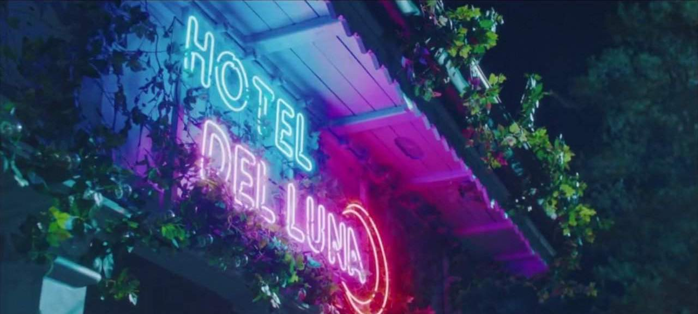
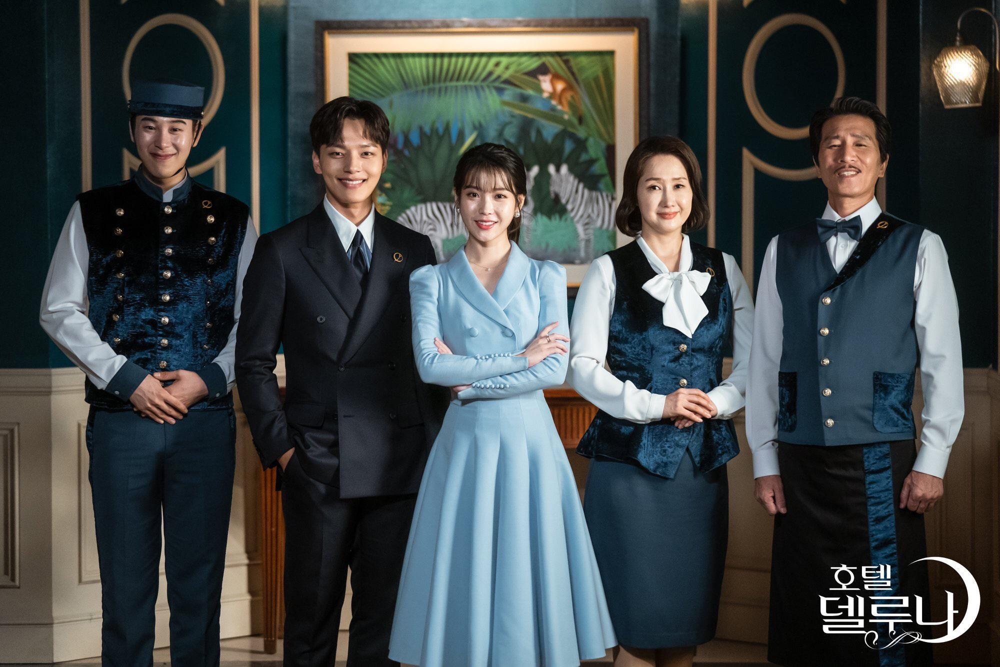
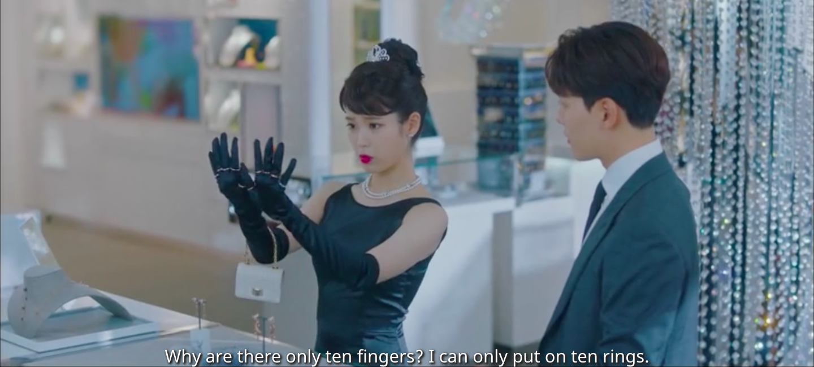

<link rel="stylesheet" href="fullbleed.css">
<link rel="stylesheet" href="https://fonts.googleapis.com/css?family=Roboto">
<main class="wrapper">
  <h1 class="center">Hotel del Luna</h1>
<p>Relationships with others complete people, making partings bittersweet. Ghosts remain on earth because of something they need resolved before crossing to the afterlife. Some ghosts just want to see their loved ones doing well, whereas others wait for vengeance. Resentful spirits who choose to hurt living humans are not reincarnated, so there are real stakes to behaving well for ghosts. This leads to a sort of tragic dilemma in that the ghosts who are able to work through the issues they held on to from life and leave happily for the afterlife typically resolve their issues with the help of others, and by helping others, and in doing so build relationships. But then when they get their (after)lives together, it's time for them to leave and forget everything. So, many sweet sorrows.</p> 
<p>The hotel is a place for ghosts with unresolved issues, which includes both guests and employees, except for the human manager.</p> 

<p>In general, I found the ghosts inside and outside the hotel compelling. Their stories never seemed generic or just another day at work for the manager. The exception is the 3 minor characters he worked closely with (bartender, room manager, and doorman). I felt like as the main supporting characters I should've had strong feelings about them, but often did not, partially because of how the show ordered ghost life and death stories. I agree that purely chronological events clearly wouldn't be good since there are a bunch of ghosts around for varying lengths of time. But what the show does that I didn't like is not show or explain what the resentment is that ghosts are holding on to until the very end of their story. So you know something is tethering them to the world but not what it is, which takes away the biggest dimension of their character for, like, most of the time you see them.</p>
<p>I particularly disliked the doorman character. I don't know if they were going for smiley, young, friendly, incompetent but loveable, or what, but even learning his story at the end didn't redeem him for me. For one thing, he has a really weird relationship with a schoolgirl, which is especially confusing because he's either a teenager or 70+ years old if ghosts age, but even assuming ghosts don't age (which is fair enough since once they grow they move on to the afterlife) he still seems older than her, and she sees him romantically but he seems to treat her as a replacement for the younger sister he wasn't able to care for in life. I didn't find him endearing in the same way cute side characters Crash Landing or Misaeng are, and even learning his story earlier wouldn't salvage that. The schoolgirl's story was interesting at first - she's the ghost of a bullied girl posessing her bully's body - but her relationship with the doorman was boring at best.</p>
<p>The bartender and room manager I wasn't very invested in either, but they had some good moments. The room manager's overall arc was great - she gave birth to a girl 200+ yrs ago, so the awful Yun family killed her baby and her because they wanted a son to carry on the family name. So she's waiting around until their family line ends. Just when she thinks the last son died unmarried, it turns out some lady he never married is pregnant with his child. Realizing the pregnant mom is basically the same as she was in life dissapates her anger. This leads to an ultimately more satisfying ending, as the pregnant mom explains she's not going to take the guy's name. So not only does that family name die out, their way of thinking about passing on the male name does too. So that story could have been perfect, but the way they tell these things is with current and past events shown in parallel, so you only get these small fragments of her earthly tether. I think their idea is to hit the climax of the past and present stories at the same time, with the present one resolving the past one. The problem for me is that it makes most of the present story sort of motivationless and bland. Like maybe knowing her past you'd often see her barely containing anger, but not knowing it her current actions seem less meaningful.</p>
<p>The bartender also had a nicely resolved story - it turns out he was stripped of his 1st place civil examination result not because he wrote lewd stories, but because he told the lives of commoners! And, in an instance of Korean pride, he chose not to write in Hanja, as was considered proper for scholars, and instead was the secret author of the most well known Korean folktales! In the end he tells his story with the help of the ghost of a famous author who died of overwork before publishing his book, and a recurring hotel guest ghost who always needs more coffee and is a great writer but is unable to choose a subject to finish a book about. They write his story together, wrapping it all up elegantly, but I just wish more of his backstory came earlier. It might be a kdrama thing to show increasingly detailed flashbacks as the present story continues, but when all you know about the guy for most of the show is that he was stripped of his 1st place exam result he's just bland.</p>

<p>Miscellaneous ghosts were more compelling though, from spycam victim to blind accident victim to tiger to grandfather to serial killer, so the hotel employees being less interesting in the background wasn't as big of an issue. In any case, Hotel del Luna is the IU show. I was going to put pictures of all her different outfits but I realized it wasn't feasible because she wears a new one like 5 times per episode. So she is not really possible to compress down from the full show. Whereas any picture of the male lead gives a pretty complete image of him.</p>

<p>And not just in terms of wardrobe, she's much more interesting than he is. In Crash Landing the two leads save one another from bullets, trauma, all the things. By contrast, the male lead in Hotel del Luna lacks any sort of tragic backstory, like he'd live fine without ever meeting her. There could've been much more around him losing his father and not knowing his mother but they're barely featured at all. Which is fine, the plot is more about Man Wol, the female lead. But it just means his character is sort of lame. Maybe less so throughout the show, but his increased competence with ghosts is not that interesting, and his personality growth is basically just a reflection of hers.</p>
<p>I will also note that he's a Harvard MBA, which of course they choose for international recognition, but in some ways a UChicago MBA would be more fitting - for one thing, he supposedly read Heidegger's Being and Time as a brag, which is a very UChicago flex. Also, she calls him a Harvard scammer, and I've heard that would fit UChicago econ majors - not all econ majors are snakes, but all snakes are econ majors. This is baseless slander though, as I personally have only met genuinely nice econ majors. It has to be Harvard in any case though because they go hard on references. She's somehow tied to the moon, so of course they use Beethoven's Moonlight Sonata. I think a character might also play Chopin's Nocturne 2 at some point, which is also big in Crash Landing, and apparently Chopin's piano music is very emotional so of course it's in kdramas. And I kind of like the referenes, like a non kdrama might be worried about being too on the nose or over the top about it but they just go full steam ahead, Heiddeger Harvard Beethoven no reservations.</p>
<p>On music, along with Man Wol, the music is the show's strongest point. In particular, since it's so much about departing loved ones, there are two approaches: try to hold on to their memory because it's a good memory, or try to forget the good memory because it's gone.</p>
<p>The only English words are "done for me", which first of all have a lot of instruments or music sounds or something there's probably a term for in the background, they're emphasized. For Koreans it must be like music that uses a phrase from some other language for English speakers. As an English speaker though it's just nice because I can hear it without looking at the subtitles. Not that subtitles are bad, they work fine.</p> 
<p>All About You: "Every time I think of a poem called 'you'/I want to memorize it so I can remember you" </p> 
<audio src="sounds/allaboutyou.mp3" controls /></audio>
<p>Done For Me: "Take all your memories/Erase everything/done for me"</p>
 <audio src="sounds/doneforme.mp3" controls /></audio>

<p>Is it better to hold on to the memory of a loved one or let go? In other news, Korean pizza is a swing and a miss. The male lead's rich friend owns a pizza resteraunt, which I think is supposed to be a fancy and happy place.</p>

<p>Let me preface this by saying Korea's commercial culture is good in many ways. Korean fried chicken is, imo, far ahead of American fried chicken. Shopping malls are basically dying in America and reborn in Korea. Korea has the best League of Legends players. Korea even makes tv dramas now. But Korean pizza is about as wrong as it gets. In the US, pizza is a great value item - it's pretty good for how cheap it is. It can be a delicacy but the basic version is still good. I think pizza in Korea is more of a delicacy. So they get the spirit of pizza wrong but whatever, if it's just relatively expensive that'd be fine. But they also just do weird things with cheese. And cheese is fundamental to pizza, so it's doomed. Maybe their cheese dishes taste right to them but to me they look like a 5 year old's version using a fridge of not quite right ingredients, centering suspicious cheese products. Having said all of this, I have never actually tried Korean pizza, because when I was in Korea there were always a lot really appetizing options available so I never tried the unappetizing pizza.</p>

<p>Going back to Hotel del Luna, again in the end it's about the relationship between the leads and in the end that's about her. Which isn't a problem because she is the most interesting character. As opposed to the other ghosts where the flashbacks presented in parallel with their present events makes it hard to understand, there's enough time spent on Man Wol that her story can unfold in a way that reveals more later but still motivates her actions throughout the present. It's also better in that as the flashbacks are in more of a diegetic form? A god makes the make lead start to see Man Wol's history in his dreams, so the viewer isn't simply presented her history in a random flashback; seeing her history is actually part of the story. So the linking of her past and present is better thought out.</p>

<p>Since korean dramas are so sincere, they take something like carrying a cup of coffee through scary ghosts seriously enough to establish tension. The ghosts go through interesting adventures together and grow together, and leave. I think there are some storytelling issues, like choosing not to stay together at the end for no clear reason. But Man Wol and her hotel still have plenty of variety and a lot of people struggling to live well and then having to leave each other when they finally get there.</p>

</main>
